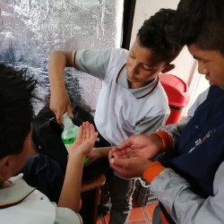
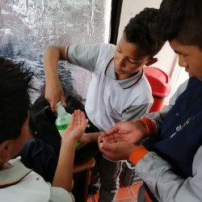
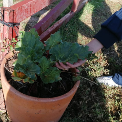
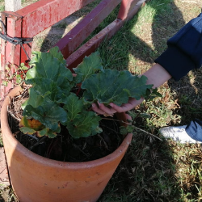

PROYECTOS DE CICLO -SECUNDARIA-
CICLO CUATRO
Parcerizate - Semilleros de Paz
Parcerizate
-Semilleros de Paz-
Este proyecto surge como una estrategia que busca generar en los estudiantes ser mejores individuos y seres sociales, la ciencia y la tecnología toman un papel importante para la reconstrucción del tejido social que se ha propagado por su mal uso y la pérdida del sentido humanístico de la educación científica por parte del individuos y la sociedad que los rodea.
Parcerizate
Este proyecto surge como una estrategia que busca generar en los estudiantes ser mejores individuos y seres sociales, la ciencia y la tecnología toman un papel importante para la reconstrucción del tejido social que se ha propagado por su mal uso y la pérdida del sentido humanístico de la educación científica por parte del individuos y la sociedad que los rodea.
 

 



CICLO CINCO
Cota -Sostenible y Productiva-
Cota
-Sostenible y Productiva-
El Proyecto Cota Productiva y Sostenible, busca orientar al estudiante de la IED Instituto Parcelas para que sea partícipe del sector productivo local y nacional, iniciando desde la clasificación de los sectores productivos en Colombia y por supuesto en el municipio, hasta llegar a tener una idea inicial de las posibles oportunidades que brinda el sector empresarial para sus proyectos de vida.
Cota -Sostenible y Productiva-
El Proyecto Cota Productiva y Sostenible, surge inicialmente con el propósito de dar a conocer a los estudiantes de la IDE Instituto Parcelas, el sector productivo que existe en el Municipio de Cota, encaminando a que la población Cotense sea la primera fuente de empleo para las empresas que operan en el sector y así mismo evitar la migración de los estudiantes una vez terminan sus estudios, hacia las grandes ciudades en busca de oportunidades laborales.